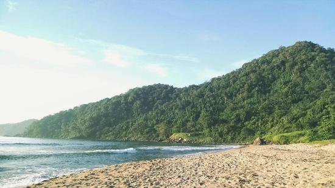
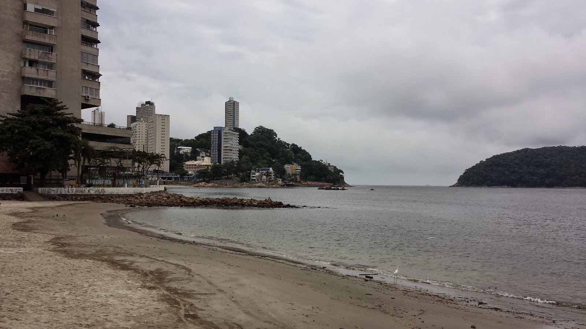
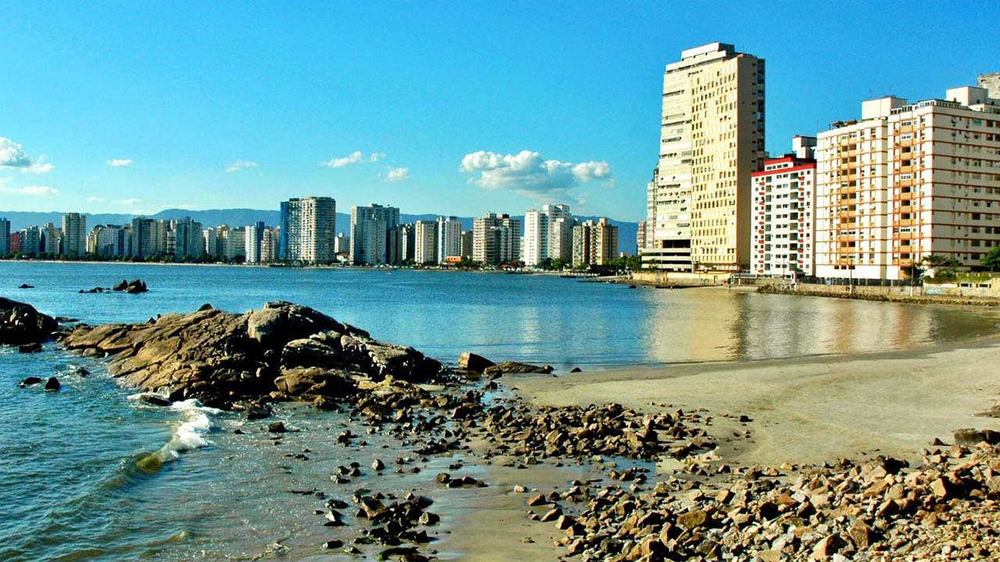
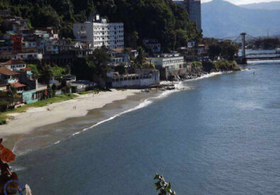
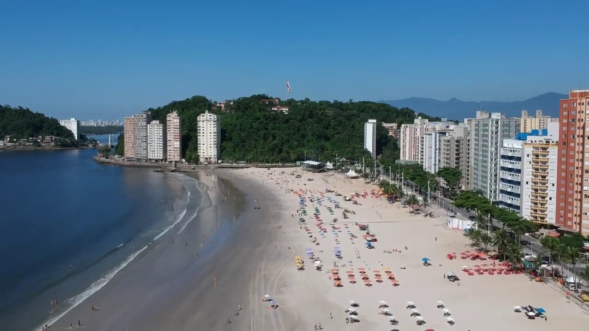

São Vicente
Céllula Mater da Nacionalidade
São Vicente é a primeira vila fundada pelos portugueses na América, em 1532. Não por acaso, o brasão dessa estância balneária contém a inscrição "Cellula Mater", pois a cidade é considerada a célula mãe dos demais municípios brasileiros.
As 5 melhores praias de São Vicente de acordo com o Tripadvisor
1-Praia Itaquitanduva
A Praia de Itaquitanduva é uma das praias mais populares de São Vicente, São Paulo. Ela está localizada no bairro de Itaquitanduva, na região norte da cidade. A praia é conhecida por sua areia branca, água cristalina e mar calmo. Ela também é uma ótima opção para quem gosta de praticar esportes aquáticos, como natação, surfe e stand-up paddle. A Praia de Itaquitanduva é uma ótima opção para quem quer relaxar e aproveitar o sol e o mar. Ela também é uma ótima opção para quem quer praticar esportes aquáticos e se divertir com a família e os amigos.
2-Praia de Itararé
A Praia de Itararé é uma praia localizada no município de São Vicente, no estado de São Paulo. Ela está localizada na divisa entre São Vicente e Santos, e é conhecida por suas belas areias brancas, águas cristalinas e ondas fortes. A praia é um ótimo lugar para surfar, nadar, praticar esportes aquáticos e relaxar. A Praia de Itararé é uma praia bem frequentada, especialmente nos fins de semana e feriados. No entanto, ela ainda é um ótimo lugar para relaxar e aproveitar o sol e o mar. A praia também é um ótimo lugar para praticar esportes aquáticos, como surfe, bodyboard, stand-up paddle e kitesurf.
3-Praia dos Milionários
A praia em si é bem pequena e estreita. As rochas que ficam à esquerda são um ótimo ponto para pesca e o seu mar muito tranquilo é propício para a prática de stand up paddle e caiaque, que inclusive podem ser alugados por ali. Mas o ponto alto da Praia dos Milionários é certamente a vista. É um espetáculo para cada lado que você olha! Com a baía de São Vicente à frente, os morros do Parque Estadual Xixová- Japuí emoldurando parte do cenário, a famosa Ponte Pênsil ao fundo e a Ilha Porchat bem ao lado, é difícil de acreditar que uma paisagem fantástica assim está tão próxima de vias de fluxo intenso e bairros densamente habitados.
4-Praia Paranapuã
Essa linda praia destaca-se pela tranquilidade e o panorâmico de toda a baía de São Vicente, é um verdadeiro espetáculo de fauna e flora pra quem deseja viajar pro litoral! Também conhecida como Praia das Vacas, a praia de Paranapuã localiza-se na saída da Baía de São Vicente, nas encostas do Parque Prainha. Fica próxima da Ponte Pênsil. Possui cerca e 600m de extensão e está localizada na encosta do Morro do Japuí, em frente à Ilha Porchat. A tranquilidade e o panorâmico de toda a baía de São Vicente são os destaques. O acesso pode ser feito de carro, pela Avenida Eng. Saturnino de Brito, que se encontra à esquerda da saída da Ponte Pênsil, no sentido Centro-Japuí, e para os mais corajosos, a pé, com cantil e provisões.
5-Praia do Gonzaguinha
Com 800 metros de extensão, a Praia do Gonzaguinha fica entre o Marco Padrão e a Praia dos Milionários. Situada em uma espaçosa baía de águas calmas, a praia é muito procurada por praticantes de esportes náuticos, como iatismo, windsurf, esqui aquático, stand up paddle e jet ski. Os frequentadores contam com quiosques instalados ao longo do calçadão, onde há também árvores e bancos, além de ciclovia. No canto direito da praia, junto à Praça Tom Jobim, o local é palco do maior espetáculo teatral em areia de praia do mundo, no local onde o navegador Martim Afonso de Sousa desembarcou em 22 de janeiro de 1532: a Encenação da Fundação da Vila de São Vicente, a primeira do Brasil.